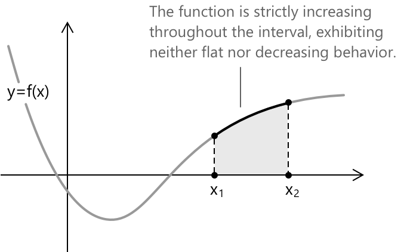
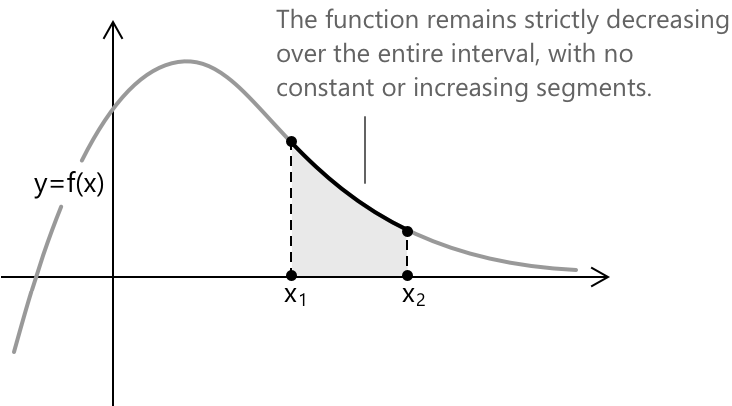
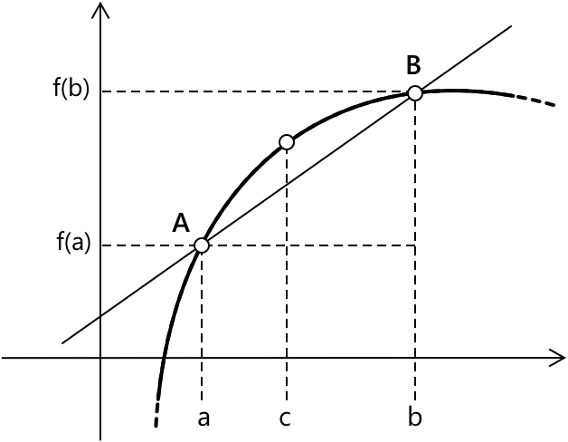

Зростаючі, спадні та монотонні функції
Вступ
Розуміння поведінки функцій є фундаментальним у математиці. Залежно від того, як їхні значення змінюються відносно аргументу, функції можуть бути класифіковані як:
- зростаючі
- спадаючі
- монотонні
Ці характеристики тісно пов'язані з геометрією їхніх графіків у декартовій площині, що дозволяє визначити, чи функція зростає, спадає або зберігає сталий напрямок тенденції.
Нехай \( y = f(x)\) — функція, визначена на області визначення \( X \subseteq \mathbb{R} \). Ми кажемо, що \( f \) є суворо зростаючою на проміжку \(I \subseteq X \), якщо для будь-яких двох значень \( x_1, x_2 \in I \), таких що \( x_1 < x_2 \), виконується наступна умова: \[ f(x_1) < f(x_2) \]

Це означає, що в міру зростання аргументу \( x \) на проміжку \( I \), значення \( f(x) \) також суворо зростає, без будь-яких плоских або спадаючих ділянок.
Нехай \( y = f(x) \) — функція, визначена на області визначення \( X \subseteq \mathbb{R} \). Ми кажемо, що \( f \) є суворо спадаючою на проміжку \( I \subseteq X \), якщо для будь-яких двох значень \( x_1, x_2 \in I \), таких що \( x_1 < x_2 \), виконується наступна умова:
\[ f(x_1) > f(x_2) \]

Це означає, що в міру зростання аргументу \( x \) на проміжку \( I \), значення \( f(x) \) суворо спадає, без плоских або зростаючих ділянок.
Функція з областю визначення \( X \subseteq \mathbb{R} \) називається суворо монотонною на проміжку \( I \subseteq X \), якщо вона є або суворо зростаючою, або суворо спадаючою на всьому проміжку \( I \), без зміни напрямку або плоских ділянок. Іншими словами, функція зберігає сталу тенденцію, або вгору, або вниз, на всьому \( I \).
Підсумуємо: нехай \( X \subseteq \mathbb{R} \), і нехай \( x_1, x_2 \in X \) при \( x_1 < x_2 \). Тоді функція \( f : X \to \mathbb{R} \) називається:
- Зростаючою: якщо \( f(x_1) \leq f(x_2) \).
- Суворо зростаючою: якщо \( f(x_1) < f(x_2) \).
- Спадаючою: якщо \( f(x_1) \geq f(x_2) \).
- Суворо спадаючою: якщо \( f(x_1) > f(x_2) \).
- (Суворо) монотонною: якщо функція є або (суворо) зростаючою, або (суворо) спадаючою.
Похідні та монотонна поведінка
Ми знаємо, що похідні використовуються для опису форми та графіка функцій. Зокрема, перша похідна функції, \( f’(x) \), може вказувати на проміжки, де вихідна функція \( f(x) \) зростає і де вона спадає.
Загалом, якщо задано функцію \( y = f(x) \), яка є неперервною на проміжку \( I \) і диференційовною у внутрішніх точках \( I \):
- Якщо \( f’(x) > 0 \) для кожного \( x \) у внутрішній частині \( I \), то \( f(x) \) зростає на \( I \).
- Якщо \( f’(x) < 0 \) для кожного \( x \) у внутрішній частині \( I \), то \( f(x) \) спадає на \( I \).
- Якщо \( f’(x) = 0 \) для кожного \( x \) у внутрішній частині \( I \), то \( f(x) \) є сталою на \( I \).
Щоб продемонструвати ці властивості, ми використаємо теорему Лагранжа. Уявімо, що маємо дві точки \( a \) та \( b \) \(\in I \) при \( a < b \). Далі, розглянемо точку \( c \), що належить проміжку \( ]a, b[ \).

За теоремою Лагранжа, маємо:
\[ f^{\prime}\left (c \right ) = \frac{f(b) – f(a)}{b – a} \]
Оскільки маємо \( b – a > 0 \) та \( f’\left (c \right) > 0 \), звідси випливає, що \( f(b) – f(a) > 0 \), що означає \( f(b) > f(a) \). Оскільки \( a \) та \( b \) є довільними точками в \( I \), функція є зростаючою на \( I \).
Аналогічно, розглянемо протилежний випадок: оскільки маємо \( b – a > 0 \) та \( f’\left( c \right) < 0 \), звідси випливає, що \( f(b) – f(a) < 0 \), що означає \( f(b) < f(a) \). Оскільки \( a \) та \( b \) є довільними точками в \( I \), функція є спадаючою на \( I \).
Приклад 1
Розглянемо функцію: \[f(x) = \frac{x^4}{4} - \frac{x^2}{2}\]
Обчислимо її похідну: \[f’(x) = x(x^2 – 1)\]
Знайдемо проміжки, на яких похідна більша за нуль. Маємо:
\[x > 0\] \[x^2 – 1 > 0 \implies x < -1 \text{ або } x > 1\]
Перемноживши знаки першого та другого множників, отримаємо проміжки, де похідна є додатною.
| \[ -1 \] | \[ 0 \] | \[ 1 \] | ||
|---|---|---|---|---|
| \( x > 0 \) | \( \boldsymbol{-} \) | \( \boldsymbol{-} \) | \( \boldsymbol{+} \) | \( \boldsymbol{+} \) |
| \( x^2 – 1 > 0 \) | \( \boldsymbol{+} \) | \( \boldsymbol{-} \) | \( \boldsymbol{-} \) | \( \boldsymbol{+} \) |
| \[f’(x)\] | \( \boldsymbol{-}\) | \( \boldsymbol{+} \) | \( \boldsymbol{-} \) | \(\boldsymbol{+} \) |
Отже, похідна \( x(x^2 – 1) \) є додатною для:
\[x \in (-1,0) \cup (1,+\infty)\]
Для повноти додамо, що аналіз знаків функції, як у наведеному прикладі, вимагає дослідження знаків її окремих множників та визначення загального знака для кожного проміжку шляхом обчислення добутку цих знаків.
Графічно її поведінка є наступною:
Отже, функція є зростаючою на проміжку \((-1,0) \cup (1,+\infty)\) та спадаючою на проміжку \((-\infty, -1) \cup (0,1)\).